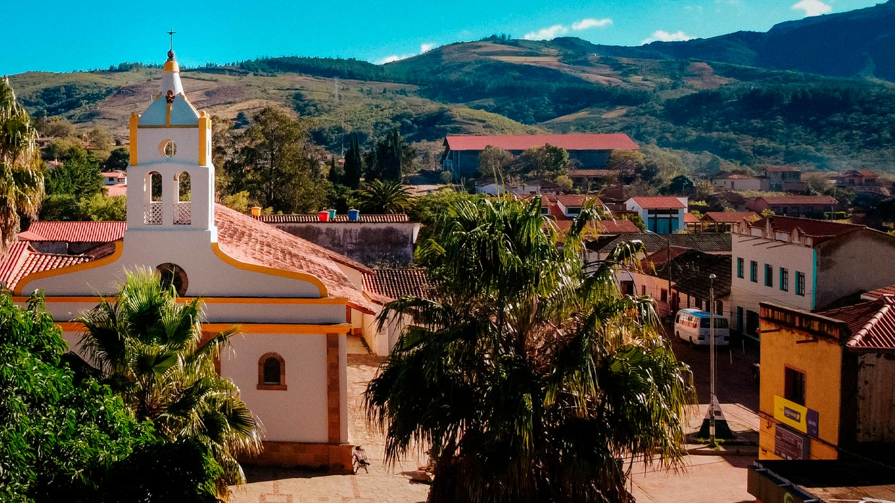
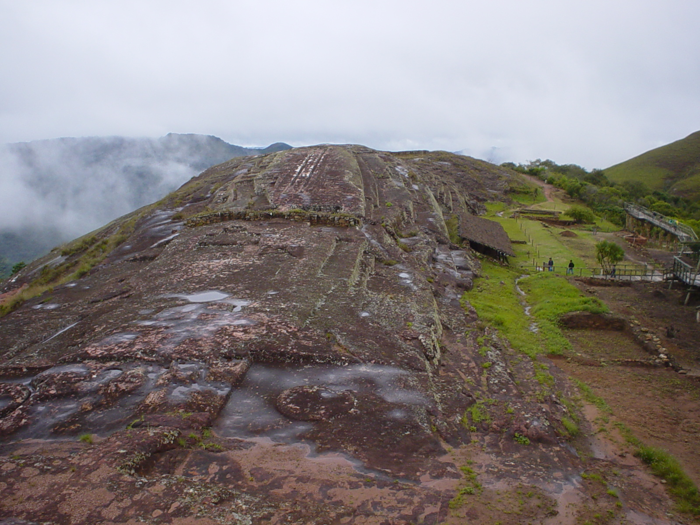

La ciudad donde creci : Samaipata

Samaipata es una de ciudad ubicada en el departamento de Santa Cruz. Se encuentra rodeada de naturaleza y es conocida por su clima templado y su ambiente tranquilo. Es un destino turístico popular debido a su belleza natural y su rica historia cultural. En Samaipata, se pueden encontrar una variedad de atracciones turísticas, como el fuerte de Samaipata, la plaza principal y los helechos gigantes, entre otros lugares interesantes para visitar.
Lugares importantes de Samaipata
El fuerte de Samaipata

Es un sitio arqueologico declarado patrimonio de la Humanidad por la UNESCO, es un lugar lleno de historia y cultura, donde se pueden encontrar restos de antiguas civilizaciones y disfrutar de vistas panoramicas impresionantes